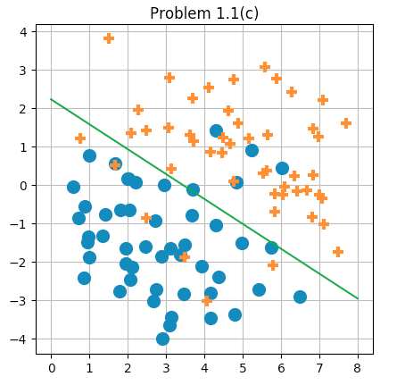

These are solutions to the most recent problems posted for Stanford’s CS 229 course, as of June 2016. I’m not sure if this course re-uses old problems, but please don’t copy the answers if so. This document is also available as a pdf.
1 Problem set 1
1.1 Logistic regression
1.1.1 Part (a)
The problem is to compute the Hessian matrix \(H\) for the function
\[J({\theta}) = -\frac{1}{m}\sum_{i=1}^m\log(g(y{^{(i)}}x{^{(i)}})),\]
where \(g(z)\) is the logistic function, and to show that \(H\) is positive semi-definite; specifically, that \(z^THz\ge 0\) for any vector \(z.\)
We’ll use the fact that \(g'(z) = g(z)(1-g(z)).\) We’ll also note that since all relevant operations are linear, it will suffice to ignore the summation over \(i\) in the definition of \(J.\) I’ll use the notation \(\partial_j\) for \(\frac{\partial}{\partial{\theta}_j},\) and introduce \(t\) for \(y{\theta}^Tx.\) Then
\[-\partial_j(mJ) = \frac{g(t)(1-g(t))}{g(t)}x_jy = x_jy(1-g(t)).\]
Next
\[-\partial_k\partial_j(mJ) = x_jy\big(-g(t)(1-g(t))\big)x_ky,\]
so that
\[\partial_{jk}(mJ) = x_jx_ky^2\alpha,\]
where \(\alpha = g(t)(1-g(t)) > 0.\)
Thus we can use repeated-index summation notation to arrive at
\[z^THz = z_ih_{ij}z_j = (\alpha y^2)(z_ix_ix_jz_j) = (\alpha y^2)(x^Tz)^2 \ge 0.\]
This completes this part of the problem.
1.1.2 Part (b)
Here is a matlab script to solve this part of the problem:
% problem1_1b.m
%
% Run Newton's method on a given cost function for a logistic
% regression setup.
%
printf('Running problem1_1b.m\n');
% Be able to compute J.
function val = J(Z, theta)
[m, _] = size(Z);
g = 1 ./ (1 + exp(Z * theta));
val = -sum(log(g)) / m;
end
% Setup.
X = load('logistic_x.txt');
[m, n] = size(X);
X = [ones(m, 1) X];
Y = load('logistic_y.txt');
Z = diag(Y) * X;
% Initialize the parameters to learn.
old_theta = ones(n + 1, 1);
theta = zeros(n + 1, 1);
i = 1; % i = iteration number.
% Perform Newton's method.
while norm(old_theta - theta) > 1e-5
printf('J = %g\n', J(Z, theta));
printf('theta:\n');
disp(theta);
printf('Running iteration %d\n', i);
g = 1 ./ (1 + exp(Z * theta));
f = (1 - g);
alpha = f .* g;
A = diag(alpha);
H = Z' * A * Z / m;
nabla = Z' * f / m;
old_theta = theta;
theta = theta - inv(H) * nabla;
i++;
end
% Show and save output.
printf('Final theta:\n');
disp(theta);
save('theta.mat', 'theta');Because I have copious free time, I also wrote a Python version. Also because I’m learning numpy and would prefer to consistently use a language that I know can produce decent-looking graphs. Here is the Python script:
#!/usr/bin/env python
import numpy as np
from numpy import linalg as la
# Define the J function.
def J(Z, theta):
m, _ = Z.shape
g = 1 / (1 + np.exp(Z.dot(theta)))
return -sum(np.log(g)) / m
# Load data.
X = np.loadtxt('logistic_x.txt')
m, n = X.shape
X = np.insert(X, 0, 1, axis=1) # Prefix an all-1 column.
Y = np.loadtxt('logistic_y.txt')
Z = np.diag(Y).dot(X);
# Initialize the learning parameters.
old_theta = np.ones((n + 1,))
theta = np.zeros((n + 1,))
i = 1
# Perform Newton's method.
while np.linalg.norm(old_theta - theta) > 1e-5:
# Print progress.
print('J = {}'.format(J(Z, theta)))
print('theta = {}'.format(theta))
print('Running iteration {}'.format(i))
# Update theta.
g = 1 / (1 + np.exp(Z.dot(theta)))
f = 1 - g
alpha = (f * g).flatten()
H = (Z.T * alpha).dot(Z) / m
nabla = Z.T.dot(f) / m
old_theta = theta
theta = theta - la.inv(H).dot(nabla)
# Update i = the iteration counter.
i += 1
# Print and save the final value.
print('Final theta = {}'.format(theta))
np.savetxt('theta.txt', theta)The final value of \({\theta}\) that I arrived at is
\[{\theta}= (2.62051, -0.76037, -1.17195).\]
The first value \({\theta}_0\) represents the constant term, so that the final model is given by
\[y = g(2.62 - 0.76x_1 - 1.17x_2).\]
1.1.3 Part (c)
The data points given for problem 1.1 along with the decision boundary learned by logistic regression as executed by Newton’s method.
1.2 Poisson regression and the exponential family
1.2.1 Part (a)
Write the Poisson distribution as an exponential family:
\[p(y;\eta) = b(y)\exp\big(\eta^T T(y) - a(\eta)\big),\]
where
\[p(y;\lambda) = \frac{e^{-\lambda}\lambda^y}{y!}.\]
This can be done via
\[\begin{array}{rcl} \eta & = & \log(\lambda), \\ a(\eta) & = & e^\eta = \lambda, \\ b(y) & = & 1/y!, \text{ and} \\ T(y) & = & y. \end{array}\]
1.2.2 Part (b)
As is usual with generalized linear models, we’ll let \(\eta = {\theta}^Tx.\) The canonical response function is then given by
\[g(\eta) = E[y;\eta] = \lambda = e^\eta = e^{{\theta}^Tx}.\]
1.2.3 Part (c)
Based on the last part, I’ll define the hypothesis function \(h\) via \(h(x) = e^{{\theta}^Tx}.\)
For a single data point \((x, y),\) let \(\ell({\theta}) = \log(p(y|x)) =\) \(\log(\frac{1}{y!}) + (y{\theta}^T x-e^{{\theta}^Tx}).\) Then
\[\frac{\partial}{\partial{\theta}_j}\ell({\theta}) = yx_j - x_je^{{\theta}^Tx} = x_j(y-e^{{\theta}^Tx}).\]
So stochastic gradient ascent for a single point \((x, y)\) would use the update rule
\[{\theta}:= {\theta}+ \alpha x(y - h(x)).\]
1.2.4 Part (d)
In section 1.10 of my notes — the section on generalized linear models — I derived the update rule:
\[{\theta}:= {\theta}+ \alpha\big(T(y)-a'({\theta}^Tx)\big)x.\]
The missing piece is to proof that \(h(x) = E[y] = a'(\eta),\) which we’ll do next. We’ll work in the context of \(T(y)=y,\) as given by the problem statement. Notice that, for any \(\eta,\)
\[\int p(y)dy = \int b(y)\exp(\eta^Ty - a(\eta))dy = 1.\]
Since this identity is true for all values of \(\eta,\) we can take \(\frac{\partial}{\partial\eta}\) of it to arrive at the value 0:
\[\begin{array}{rcl} 0 & = & \frac{\partial}{\partial\eta}\int p(y)dy \\ & = & \int \frac{\partial}{\partial\eta} b(y)\exp(\eta^Ty - a(\eta))dy \\ & = & \int b(y)(y - a'(\eta))\exp(\eta^Ty - a(\eta)) dy \\ & = & \int y p(y)dy - a'(\eta)\int p(y)dy \\ & = & E[y] - a'(\eta). \end{array}\]
Thus we can conclude that \(E[y] = a'(\eta) = a'({\theta}^Tx),\) which completes the solution.
1.3 Gaussian discriminant analysis
1.3.1 Part (a)
This problem is to show that a two-class GDA solution effectively provides a model that takes the form of a logistic function, similar to logistic regression. This is something I already did in section 2.1 of my notes.
1.3.2 Parts (b) and (c)
These parts ask to derive the maximum likelihood estimates of \(\phi,\) \(\mu_0,\) \(\mu_1,\) and \(\Sigma\) for GDA. Part (b) is a special case of part (c), so I’ll just do part (c).
It will be useful to know a couple vector- and matrix-oriented calculus facts which I’ll briefly derive here.
First I’ll show that, given column vectors \(a\) and \(b,\) and symmetric matrix \(C,\)
\[\nabla_b [ (a-b)^T C (a-b) ] = -2C(a-b).\]
We can derive this by looking at the \(k^\text{th}\) coordinate of the gradient. Let \(x = (a-b)^T C (a-b).\) Then, using repeated index summation notation,
\[\begin{array}{crcl} & x & = & (a_i - b_i)c_{ij}(a_j-b_j) \\ \Rightarrow & [\nabla_b]_k x & = & -c_{kj}(a_j - b_j) - (a_i - b_i)c_{ik} \\ & & = & -2C(a-b). \\ \end{array}\]
Next I’ll show that
\[\frac{\partial}{\partial C}(a-b)^T C (a-b) = (a-b)(a-b)^T.\]
This follows since
\[(a-b)^T C (a-b) = (a_i - b_i) c_{ij} (a_j - b_j),\]
so that
\[\frac{\partial}{\partial c_{ij}} (a-b)^T C (a-b) = (a_i - b_i)(a_j - b_j).\]
In other words, the \(ij^\text{th}\) entry of the matrix derivative is exactly the \(ij^\text{th}\) entry of the matrix \((a-b)(a-b)^T.\)
Finally, I’ll mention that, when a matrix \(A\) is invertibe,
\[\frac{d}{dA} |A| = |A|\,A^{-T}.\qquad(1)\]
This can be seen by considering that the \(ij^\text{th}\) entry of \(A^{-1}\) can be written as
\[(A^{-1})_{ij} = ((-1)^{i+j}M_{ji})/|A|,\qquad(2)\]
where \(M_{ij}\) denotes the determinant of the minor of \(A\) achieved by removing the \(i^\text{th}\) row and \(j^\text{th}\) column. Next, consider the expression for \(A\) as a sum of products \(\sigma(\pi)\prod a_{i\pi(i)}\) over all permutations \(\pi:[n]\to[n]\) where \(\sigma(\pi)\) is the sign of permutation \(\pi\) (reference). Based on that definition of a determinant, it can be derived that
\[\frac{\partial}{\partial a_{ij}}|A| = (-1)^{i+j}M_{ij}.\]
Combine this last result with (2) to arrive at (1).